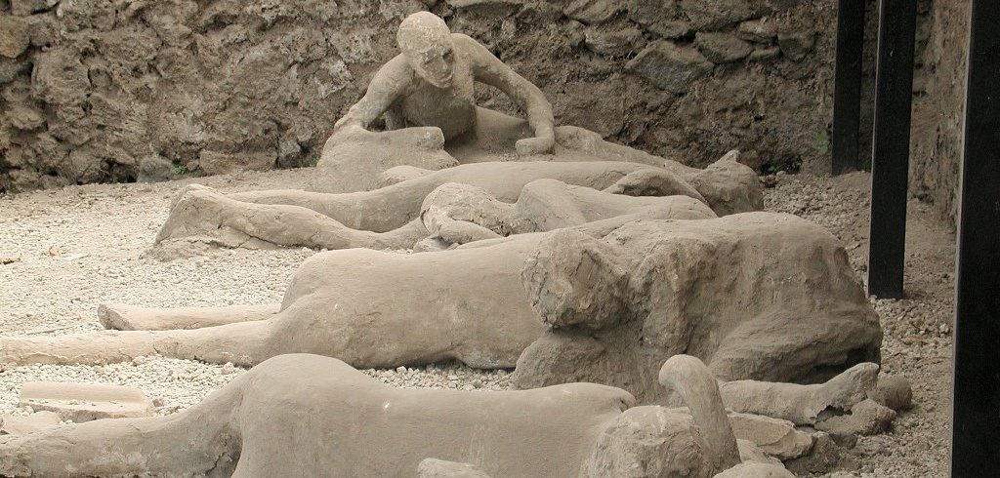

Pompeii, a flourishing resort city south of ancient Rome, was nestled along the coast of Italy in the shadow of Mount Vesuvius, an active volcano. Its most famous eruption took place in the year 79 A.D., when it buried the city of Pompeii under a thick carpet of volcanic ash. The dust “poured across the land” like a flood, one witness wrote, and shrouded the city in “a darkness…like the black of closed and unlighted rooms.” Two thousand people died, and the city was abandoned for almost as many years. When a group of explorers rediscovered the site in 1748, they were surprised to find that beneath a thick layer of dust and debris, Pompeii was mostly intact. The buildings, artifacts and skeletons left behind in the entombed city have taught us a great deal about everyday life in the ancient world.
